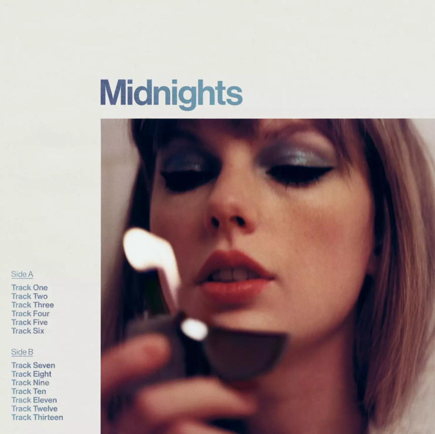

Inicio
Discografía
Contacto
DISCOGRAFÍA
Taylor Swift
Fearless (Taylor's Version)
Speak now (Taylor's Version)
Red (Taylor's Version)
1989 (Taylor's Version)
Reputation
Lover
Folklore
Evermore

Midnights
The tortured poets department
The life of a showgirl